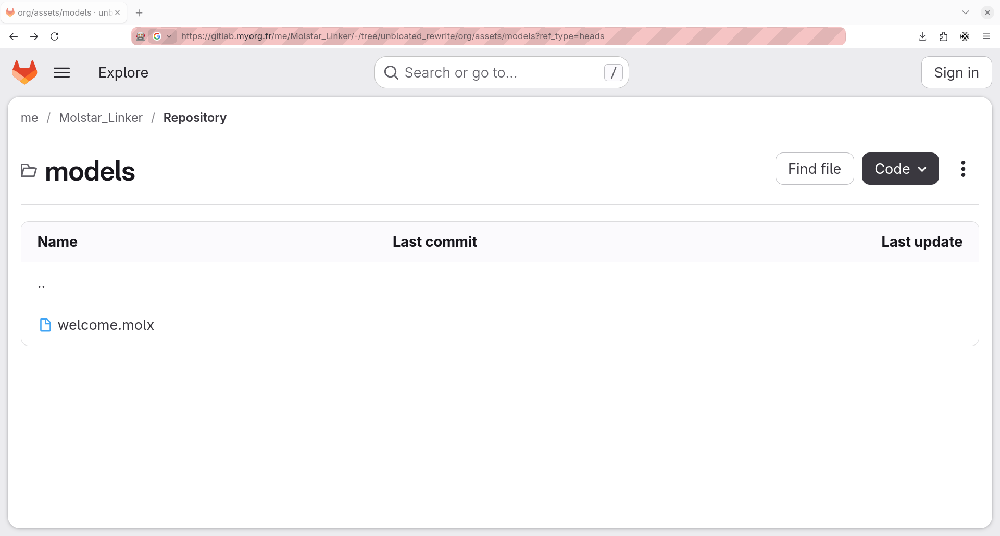
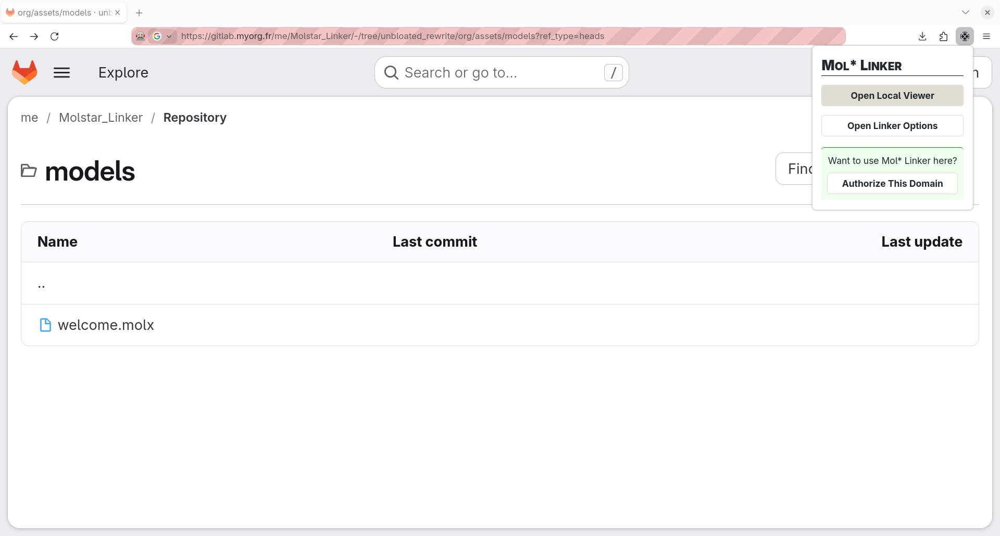
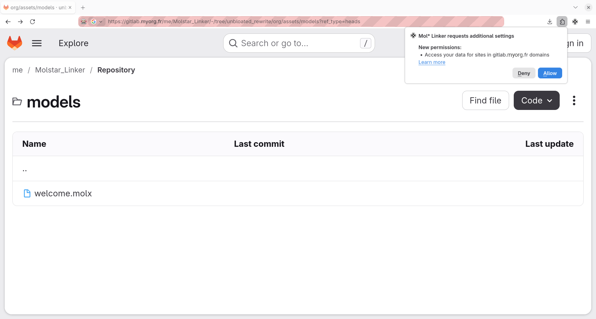
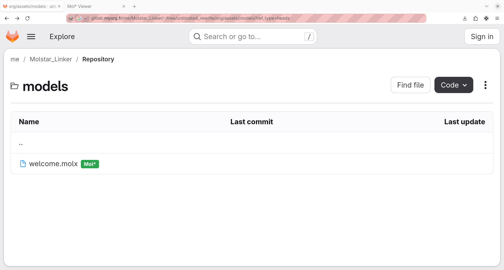

Custom Domains
Mol* Linker supports private instances of GitLab, Nextcloud, and other platforms. To enable the extension on custom domains:
Visit the private instance hosting your file.

Open the Mol* Linker popup by clicking the extension icon in your browser toolbar.

Click on the "Authorize This Domain" button which will allow Mol* Linker the request authorizations for your instance.

Allow the new permissions request.

You should now be able to see a badge appear.